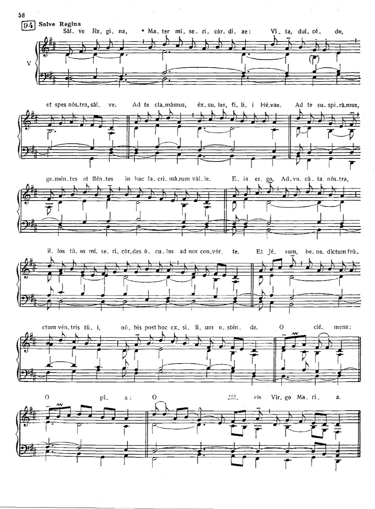

DO FA MIm Salve, Regina, Mater misericordiae, DO REm SOL LAm vita, dulcedo et spes nostra, salve. DO LAm REm SOL Ad te clamamus exsules filii Evae. DO REm LAm MIm Ad te suspiramus gementes et flentes REm LAm in hac lacrimarum valle. SOL7 DO REm MIm Eia, ergo, advocata nostra, LAm REm SOL MIm FA LAm illos tuos misericordes oculos ad nos converte; DO LAm REm SOL et Jesum, benedictum fructum ventris tui, DO REm LAm DO nobis post hoc exsilium ostende. FA SOL LAm DO REm SOL O clemens, O pia, FA REm MIm FA DO O dulcis Virgo Maria.

Acompa?amiento con ?rgano (Liber cantualis)
